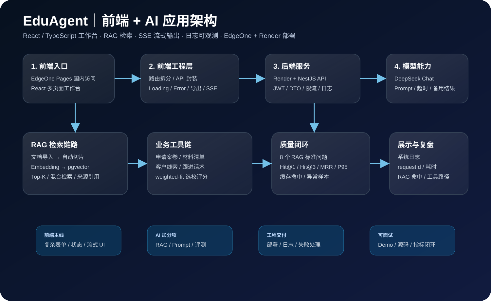
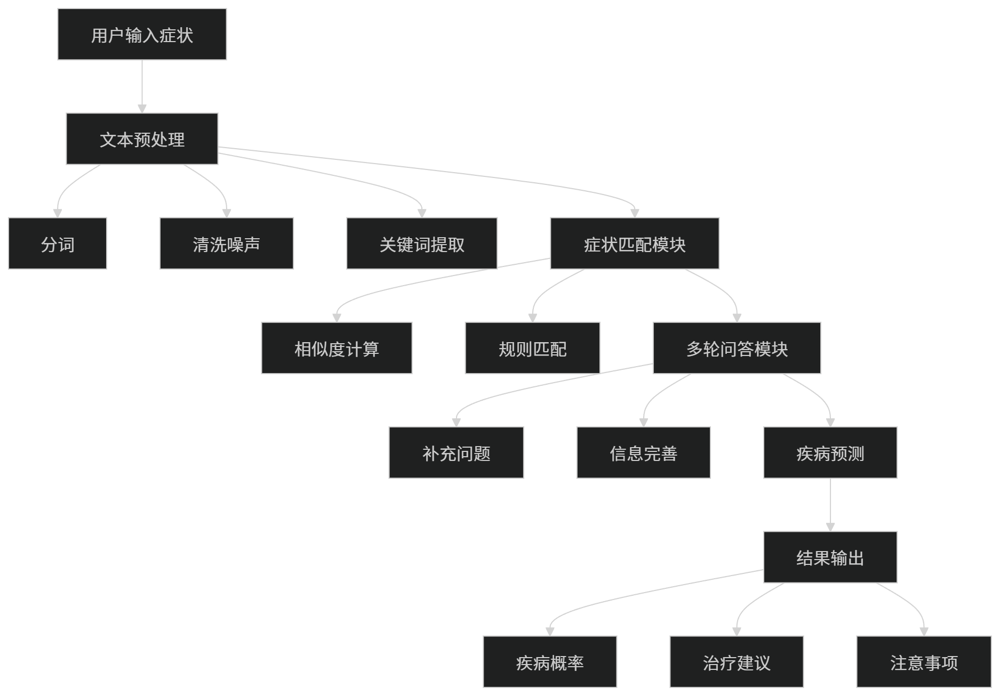

前端工程主线
用 React + TypeScript 组织多页面工作台，处理复杂表单、折叠面板、结果导出、状态缓存、错误边界和移动端适配。
前端开发 / AI 应用 / 全栈方向 实习生
我的主线是 React + TypeScript 前端工程，但不只停在页面：我会把接口层、AI 调用、RAG 检索、SSE 流式输出和日志观测一起接进业务流程。EduAgent 偏业务型 AI 工作台，TokenFence Studio 偏开发者工具和 Prompt 安全层，两个项目正好覆盖「前端 + 后端 + AI 应用」这条线。
可实习时间：2026 年 7 月 - 12 月。投递时可以按前端、AI 应用前端、全栈 / 后端基础、AI 工具链四条线切换重点。
Profile
Computer Science Undergraduate · Front-end · AI Application · Full-stack
展示重点不是堆概念，而是把前端页面、AI 能力、后端接口、开源项目和线上部署串成一个能演示、能追踪、能复盘的项目闭环。
用 React + TypeScript 组织多页面工作台，处理复杂表单、折叠面板、结果导出、状态缓存、错误边界和移动端适配。
把 LLM 调用、Prompt、RAG 检索、SSE 流式输出、来源引用和长耗时提示接入真实业务流程。
围绕 RAG 做文档切片、Embedding、Top-K 召回、关键词 + 向量混合检索，并设计 weighted-fit 选校评分逻辑。
TokenFence Studio 把 Prompt 安全、模型路由、上下文压缩、CLI / MCP 入口做成一个本地优先 AI 工作台。
页面不直接写目标公司，而是把项目拆成几条可切换的能力线。面试官看前端，就先看页面工程；看 AI 应用，就先看 RAG / Prompt / 多模型；看全栈，就看接口、日志、部署和本地存储。
用 EduAgent 展示 React + TypeScript 多页面工作台、复杂表单、状态管理、Error Boundary、移动端适配和结果导出。
用 EduAgent 和 TokenFence 展示 LLM API、RAG、来源引用、Prompt Guard、模型对比、长耗时任务提示和风险状态展示。
强调 NestJS / Next.js 接口、JWT、DTO 校验、限流、日志、Provider Registry、本地归档和部署联调，不把自己包装成纯后端。
TokenFence 更适合讲 AI Infra 入门感：Prompt 发送前的安全检查、文件级路由、多模型对比、CLI 和 MCP 入口。
成都泓麒教育科技有限公司 · 成都
主项目突出“前端 + AI 应用 + 工程闭环”；TokenFence 作为新开源项目放在第二屏，证明你不只是做业务 Demo，也在做 AI 工具链。
建议按岗位选择演示顺序：前端先讲 EduAgent；AI 工具链 / 全栈方向先讲 TokenFence。
个人全栈项目：用前端工作台承载 AI 咨询、申请案卷、知识库检索、日志和评测闭环
背景：留学咨询里，学生背景、选校、文书、材料清单和销售跟进分散在不同工具里。EduAgent 把这些流程放进一个工作台，顾问输入学生信息后，可以得到结构化建议、文书方向、跟进话术和材料清单。

开源项目：把 Prompt 发送前的安全检查、脱敏、意图判断、上下文压缩和模型路由做成一个可运行的工作台
这个项目不是普通 Chat UI，而是站在模型调用前面做一层“预处理”：先看内容是否有风险、是否需要脱敏、是否应该压缩、该走云端模型还是本地模型，再把最终 Prompt 和路由结果展示出来。
真实教育咨询业务中的 AI 工具落地项目
文本处理、规则检索和安全边界练习项目

这些项目不抢主线，但保留在线 Demo 和源码，用来补充基础广度。
优先级按投递方向组织：前端主线，AI 应用和全栈能力作为加分项。
React · TypeScript · JavaScript · HTML5 / CSS3 · 组件拆分 · 路由组织 · 复杂表单 · 状态管理 · 本地缓存 · 响应式布局 · 移动端适配 · SSE 流式渲染 · Loading / Empty / Error · Error Boundary · 复制导出
LLM API 调用 · Prompt 设计 · RAG 文档切片与检索 · Embedding · pgvector · Top-K 召回 · 来源引用 · 检索评测 · Prompt Guard · 多模型对比 · AI 调用耗时 / 命中 / 异常观测
NestJS · Next.js Route / Server Components · REST API · JWT · DTO 校验 · 接口限流 · 异常处理 · Provider Registry · CLI · MCP Server · 日志记录
Python 文本处理 · Java 面向对象 · Flutter / Dart 基础 · SQL 查询 · 项目部署 · 需求拆解 · 接口联调 · 演示材料整理
本科阶段学习方向包括软件开发、数据库、移动应用开发、人工智能基础和计算机科学核心课程。
计算机科学学士学位 · Bachelor of Computer Science
校区位于 Technology Park Malaysia, Bukit Jalil, Kuala Lumpur。学校安排实习时间为 2026 年 7 月 - 12 月。
Asia Pacific University of Technology & Innovation 位于 Kuala Lumpur, Malaysia。